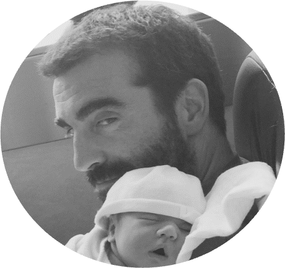
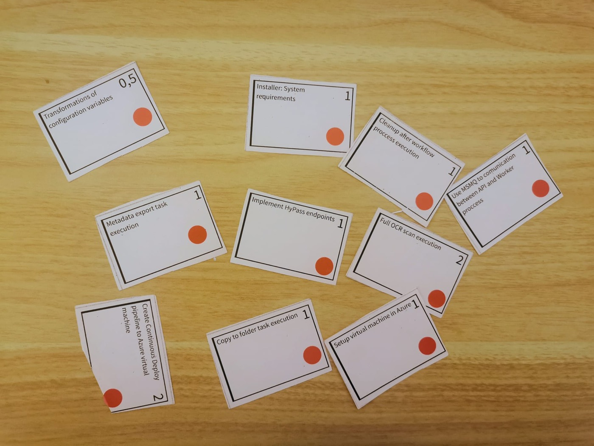
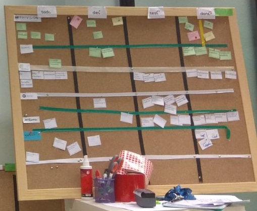
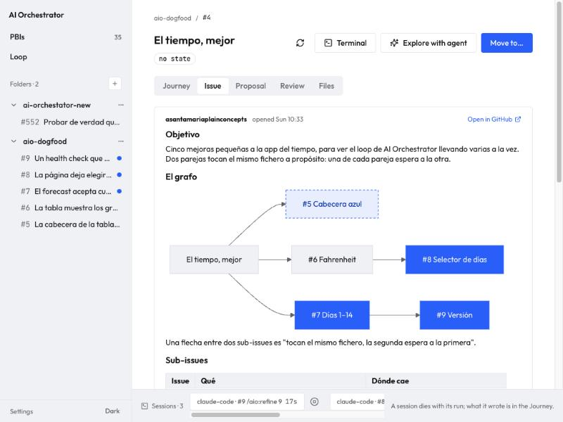
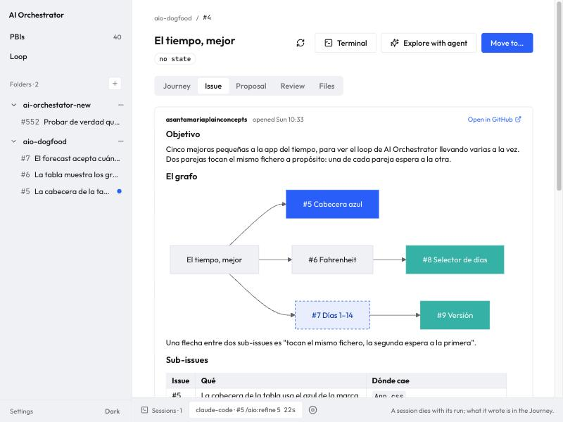
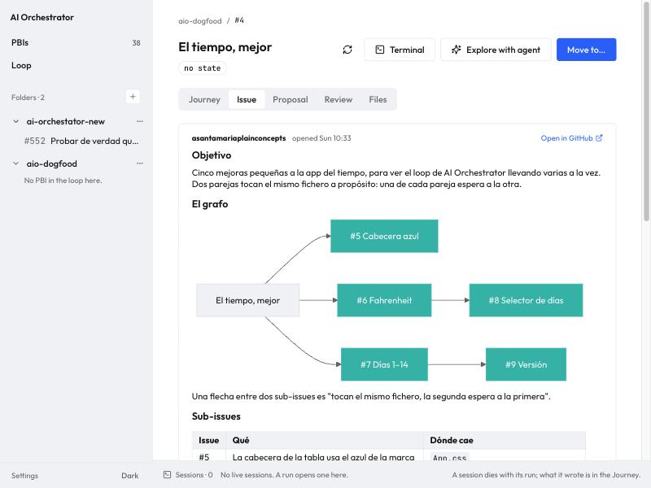

Cuánto pueden romper, qué dejan escrito y cómo sabes que funcionó

<NetCoreConf/>Madrid ‘26
Sponsors
Platinum sponsors

Gold sponsors
Colabora
<NetCoreConf/>Madrid ‘26

¡Hola!
Andoni Santamaría
Principal Engineer Development · Plain Concepts
Microsoft MVP
X @AndoniSantamari github.com/andonisan
Antes de empezar · manos arriba
¿Cómo trabajáis hoy con agentes?
1
Vibe codingLe pido algo, aplico lo que sale y pruebo.
2
Plan y applyLe pido un plan, lo reviso y después lo aplica.
3
El repo enseña al agenteAGENTS.md, skills, comandos y hooks versionados en el repo.
bloque 01
4
Varios a la vezCada agente en su worktree o en un sandbox.
bloque 03
5
Un loopPasos con gate y evidencias; miro solo lo que se para.
bloque 02
<NetCoreConf/>Madrid ‘26
Abrir diez terminales es lo fácil. Lo difícil son tres preguntas.
01¿Cómo controlas algo que no es determinista?
02¿Cómo sabes qué ha hecho cuando no estabas mirando?
03¿Cómo trabaja una persona con diez a la vez?
La respuesta empieza hace no mucho, sin agentes.
Antes de los agentes · un corcho y unas tarjetas
Una tarjeta por tarea y cuatro columnas

Cada tarjeta, una tarea y su estimación

todo · dev · test · done, una fila por proyecto
El flujo ya estaba ahí: cada tarjeta, de una columna a la siguiente.
En las mejores familias, sin agentes
Así trabajábamos hace no mucho
1Refinarel equipo y el POel ticket
2Diseñarun dev seniorel diseño
3Ramaquien lo cogegit switch -c
4Códigoun devlos commits
5CIel pipelineverde o rojo
6QAalguien de QAcapturas, notas
7Reviewotro devel PR
8Mergeel pipelinea main
Cada caja tiene un dueño y deja algo escrito: el ticket, el diseño, la rama, el PR, el informe de CI.
¿Está listo?
¿Es lo que queremos?
¿Funciona?
¿Es lo que pedimos?
Y en cuatro sitios decide una persona.
Definition of Ready
DoR: lo que entra
TICKET· Definition of Ready
✓Qué pasa hoy
✓Qué tiene que pasar
✓Criterios de aceptación
✓Lo que queda fuera
Ticketlo escribe alguien
Refinamientoel equipo lo lee
Sprintready: entra
vuelve, con preguntas
Si no cumple, no entra. Nadie empieza a programar sobre un hueco.
Definition of Done
DoD: lo que sale
Definition of Done
✓Los tests, en verde
✓Revisado por otra persona
✓Lo que cambia, documentado
✓Desplegado donde se puede probar
"ya está, me funciona"Una sensación de quien lo programó
4 de 4Una lista que se puede comprobar
Hecho es una lista, y es la misma para todos.
Tests y sus informes
Una PR con un CI que dice lo que midió
1El CI corre todos los tests, no los que se acuerda alguien.
2Deja un informe: cuántos tests, la cobertura de lo que cambió y, en los equipos más cuidadosos, la mutación.
3QA añade capturas de lo que probó.
Comentario en la PR · informe de CI
Tests250 de 250
Cobertura de lo que cambió82 %
Mutación71 %
Capturas de QA4
números de ejemplo
El informe va en la PR. Quien revisa no tiene que creerse a nadie.
Métricas de delivery
Cómo sabías si entregabas mejor
Frecuencia de despliegue¿Cuántas veces llega algo a producción?
Lead time del cambio¿Cuánto tarda un cambio en llegar?
Tasa de fallo¿Cuántos despliegues hay que arreglar?
Tiempo de recuperación¿Cuánto se tarda en volver a estar bien?
retro de cada sprintLas cuatro de DORA, miradas en equipo.
Sabías si un cambio en el proceso mejoraba algo, o solo lo parecía.
Hoy, el mismo flujo
Las cajas van más rápido
Cada práctica, un paso
¿Es esto lo que queremos?
¿Es esto lo que pedimos?
1Refinarun agente/aio:refine
2Planearun agente/aio:propose
3Ramaun scriptchange/<n>
4Códigoun agente/aio:implement
5CIun scriptgate · quality
6QAun scriptevidence
7Reviewotro agente/aio:review-diff
8Mergeun scriptmerge
un agente: no es deterministacódigo: misma entrada, misma salidauna persona decide
Cada paso del flujo va más rápido. El siguiente lo sigue decidiendo código.
AntesHoylo que deja
DoR y refinamiento→/aio:refinecontra la plantilla de la issue: ready o preguntas
Diseño→/aio:proposeel plan en la issue; lo aprueba una persona
CI y su informe→gate · qualitycuántos tests contó, cobertura, CRAP y mutación
Capturas de QA→evidencecada pantalla que toca el cambio, en claro y en oscuro
Code review→/aio:review-diffotro agente contra el plan, y una persona antes del merge
Métricas de delivery→journeyuna fila por paso en cada issue: quién, cuánto, cómo acabó
Cada paso deja algo que se puede comprobar: una línea con su resultado, un informe, unas capturas, una puntuación de riesgo.
Antes de empezar · el punto de partida
La app del dogfood, tal como está hoy
Una app del tiempo de ejemplo. Al final de la charla, esta misma página.
Antes de empezar · en directo
Una idea de una línea, y el loop trabajando
ExploreQue la cabecera de la página diga «¡Hola, NetCoreConf Madrid!» en una línea nueva bajo el subtítulo. Solo ese texto, sin enlace, sin tocar el título ni el pie. Es una issue pequeña: escríbela sin preguntarme y métela en el loop, en ready-for-proposal.entra sola en el loop
Mientras tanto, mi issue
¿Hace falta una persona?
aio-dogfoodel plan no espera
spec-ready:
command: /aio:propose
next: in-progress
# el plan sigue solo
ai-orchestratorespera si el riesgo es alto
proposal-review:
score: risk-score
on:
low: in-progress
high:
hold: El score de riesgo salió alto
Mi issue no me ha esperado: en el dogfood el plan pasa solo a implementar. En el orquestador, si el riesgo sale alto, espera a la pregunta de siempre.
Dónde decide una persona está en el yaml, no en el prompt.
01
01 · 10 min
Cómo controlar a los agentes
Finales de agosto · otro proyecto
El agente no va a ser determinista
24tickets a la vez
23de una sola línea
~90decisiones tomadas solos
Todas plausibles. Ninguna la habíamos pedido. Y no hay prompt que lo arregle.
Lo que sí puede ser determinista es todo lo que lo rodea.
qué leequé recibequé puede tocarqué entrega= el harness
Lo que lee
El repositorio es la base de conocimiento
AGENTS.md no es un documento de normas: es un índice. En brownfield las specs no se escriben: el 22 de agosto sacamos 37 del código que ya había.
Lo que no lee: menos documentos
922 → 500líneas canónicas en octubre
El 15 de agosto borramos seis documentos: de 40 ítems de backlog, 33 ya estaban hechos y explicados en el código. GitHub tiene el estado del trabajo; el repo, los hechos del código.
# AGENTS.md
You need…Look in
Qué es el productodocs/product/
Cómo está hechoARCHITECTURE.md
Cómo se pintaDESIGN.md
Lo que hace, como requisitosopenspec/specs/ · 26 specs
Por qué se decidió asídocs/adr/
Cómo corre el loop.aio/
Qué hace cada agente.ai/commands/aio/
Qué puede y qué no.claude/hooks/
El porqué de cada cosael comentario del código
Lo que recibe
La issue es el contrato, y el contrato es una plantilla
.aio/templates/issue.md
## Qué pasa hoy<!-- una observación con un número o un path -->
## Qué tiene que pasar<!-- el resultado, no la solución -->
## Dónde cae<!-- los ficheros que toca -->
## Comprobación<!-- cómo sabría otro que está hecho sin preguntar -->
## Lo que no es<!-- para que no se lo invente -->
Si una sección no responde lo que pide, el refiner devuelve la issue con preguntas.
Los ~90 huecos de agosto ahora son preguntas, no decisiones tomadas solos.
Cambias la plantilla, cambias el DoR. Sin tocar ningún prompt.
Del documento al mecanismo
parallel.mdcuatro reglas en un documento
AGENTS.mdal día siguiente, las mismas
analizadoreswarnings como errores
scriptsgate, overlap, claim, merge
hookspre-tool-use bloquea
Y el agente las leía, y a veces las cumplía. Cada vez que un agente nos enseñaba que el documento no bastaba, movimos una cosa más al mecanismo.
Un documento es una sugerencia. Un analizador que rompe el build es una regla.
Lo que hay en .aio/
.aio/·
loop.yamlel orden de los pasostuyo
gatetu comando: verde o rojotuyo
config.jsonqué se fotografía, mide y protegetuyo
context.mdlo que añade tu repo a los comandostuyo
templates/issue.md y epic.md: el contratotuyo
steps/un fichero por paso del loopdel paquete
checks/un check de calidad por ficherodel paquete
lib/lo que comparten los pasosdel paquete
scorers/laya/el modelo de riesgo, opcionaldel paquete
El motor no lee la salida: lee esa línea.Un script que no la deja no ha pasado, ha fallado, y lo dice.
Lo que el agente dice de sí mismo es entrada no fiable.Se valida contra un esquema. Si falta, está a mano o es una salida que su estado no tiene, el run ha fallado.
Lo determinista es el camino, nunca la respuesta.El modelo, para lo ambiguo; el código, para todo lo que guarda, comprueba o cambia estado.
El gate es un script, y dice por qué
118de 250
15 de agosto: un agente ejecutó dotnet test sin la solución. Los 132 que faltaban vigilan las fronteras entre módulos, y ese cambio se mergeó.
Si una comprobación se puede ejecutar a medias, un agente la ejecutará a medias.
{"outcome": "green", "why": "aspire do ci passed: 10/10 steps succeeded. Log: $TMPDIR/aio-gate-8e08fdf.log"}
Cada gate guarda su log y el diario lo enlaza desde la línea que dice rojo.
Lo corre el loop, no el agente. Un rojo que no dice por qué es casi tan malo como un verde que miente.
Las evidencias viven en la issue, no en tu base de datos
aio-dogfood#43status:donechange/43el estado es la etiqueta; la reserva, la rama
aio · refineRefinadoLas cinco secciones responden. Pasa a planear.
aio · propose## PlanTres pasos, los ficheros que toca y cómo se comprueba.
motor · lo edita en cada transición<!-- aio:journey -->Una fila por paso: quién, cuánto tardó, cuánto costó, cómo acabó y por qué. Uno por issue, nunca cuatro.
evidence · después del gate<!-- aio:evidence -->8 capturas: cada pantalla que toca, en claro y oscuro, a 1440 y a 390.
aio · review / retro## Review · ## RetroComentarios que escriben los agentes.
El montaje y los permisos también cuentanEl loop usa --clone. Una microVM no protege lo que le montas con escritura, y que no lea el token no significa que no pueda hacer un push.
ACA Sandbox · el agente ya no corre en mi portátil{{ d5Label }}{{ d5Src }}
Backend 5 · Azure Container Apps Sandbox
Gestionado en AzureSin VM ni clúster que mantener. La página hace el resume antes de conectar: parado por inactividad, no abre la shell.
$ aca sandbox list
$ aca sandbox resume -l name=pty-demo
$ aca sandbox shell -l name=pty-demo -c /bin/sh
6.12.8kernel
rootusuario
—sin Docker
Root aquí no es root en mi portátilPero tampoco me llevo el checkout, las herramientas ni las credenciales: hay que decidir cómo entra el código y cómo sale.
El coste de alejarloCreación en 1,6 s; primera shell, 1,7–3,4 s. Medidas del ensayo, no un SLA. Hace falta el rol SandboxGroup Data Owner.
Si ya tienes Kubernetes
Kata Containers: la misma API, otra frontera
Kubernetes organiza los pods; por sí solo no les da un kernel propio. Kata ejecuta cada pod en una VM ligera.
el mismo nodo · k3s en Lima
probe-runccomparte el kernel del nodo7.0.0-34-generic
probe-katasu propia VM ligeraruntimeClassName: kata-qemu6.18.35
$ kubectl exec probe-runc -- uname -r
$ kubectl exec probe-kata -- uname -r
No es el Mac contra Linux: dos pods del mismo nodo. Luego, el backend 4 · agent-sandbox en Kata (no el 4b, que es runc).
Kata aísla; agent-sandbox gestiona el ciclo de vida.
Suspender conservó el disco, no el proceso: vuelta a Running en 28–35 s. Corre en este portátil; no es AKS ni está conectado al loop.
Qué aísla cada uno, y qué no
Más aislado no es mejor. Elige según lo que el agente podría romper y lo que necesita para trabajar.
OpciónQué separaQué sigue siendo nuestro
WorktreeCarpeta de trabajo, índice y ramaProcesos, puertos, datos, credenciales y red del host
sbxKernel y Docker propios en una microVMMontajes, permisos del proxy y política de salida
ACAEjecución remota en un sandbox gestionadoIdentidad, código de entrada, herramientas y resultados
KataKernel propio por podClúster, volúmenes, identidades y política de red
Un sandbox no sustituye al gate.
El gate sigue corriendo en el worktree del host, y un build ejecuta código que acaba de escribir el agente. El sandbox limita dónde puede hacer daño; el gate y las evidencias dicen si hizo lo que tenía que hacer.
Diez a la vez sin pisarse
Dónde caeCada issue dice qué ficheros toca. Si dos chocan, una espera.
El grafo de la épicaEn mermaid, en su propia descripción: qué va después de qué.

14 de octubre · etiqueté las cuatro sub-issues a la vez
08:37:07#44waited — #43 goes first (the epic's graph)
08:37:08#43waited — #42 goes first (the epic's graph)
08:37:08#42started /aio:refine
08:37:09#41started /aio:refine
Nadie tocó una etiqueta más.
Cada una arrancó cuando la anterior se integró.
Tú miras un sitio, no diez terminales
70 sEl 14 de octubre se me cayó el login de Claude Code. En setenta segundos las dos issues en marcha estaban paradas en Needs you, con lo que había que hacer.
Needs you#41 · implement · hold
the run failed (NotLoggedIn): Claude Code is not logged in. Run claude /login on this machine, then release.
ReleaseVer el run
Antes, la misma situación nos tuvo una hora, con dos agentes esperando una aprobación que nadie veía.
Hacia dónde vamos
Y cómo sabes si mejora
+30 %de código por persona
=issues y épicas cerradas
+49 %de tiempo de PR a merge
Chen y Stratton, Harvard, octubre 2026. Datos de unas 700 empresas hasta marzo de 2026.
Dónde se va el tiempo de un PBImaqueta · números de ejemplo
24 %11 %29 %27 %
agentegateesperando a una personaen colamergea mano
Si pesa la cola, subes el WIP. Si pesa la persona, miras los holds.
La eficiencia de flujo de siempre. Lo nuevo es que cada espera tiene nombre, porque cada hold dice por qué.
Holds por motivo, y cómo acabaronen aio hoy
El score de riesgo salió alto14 holds
Soltado sin cambios 14 de 14: este hold no atrapó nada
Un hold que nunca cambia nada no protege: solo te cuesta tiempo.
Lo quitas o subes el umbral, y lo decides con datos.
Lo siguiente
Coste por cambio aceptadoNo por tokens: el mismo task puede gastar 30 veces más sin acertar más.Larridin y Unicoconnect, 2026
Antes y despuésCada cambio del loop es un experimento: el paso a Sonnet desde implement, medido.gh aw audit, GitHub 2026
El código que sobreviveQué sigue igual a las cuatro semanas, y qué hubo que arreglar después del merge.GitClear · DORA 2026
El cuello de botella ya no es escribir. Es quien revisa: tú.
Ninguna idea es nuestra. Lo nuestro es que los datos ya están en la issue.
04
Lo que ha pasado · 6 min
Lo que ha pasado mientras hablaba
La idea de una línea del principio: del refine al merge, sin tocarla.
Lo que ha pasado mientras hablaba{{ d2Label }}{{ d2Src }}
1La issue: la que escribió el agente, ahora en status:done.
2El Journey: una fila por paso: quién, cuánto, cómo acabó.
3El plan: el que pasó solo, sin esperarme.
4La grabación: del implement, reproduciéndose.
5Gate, quality y capturas: lo que contó, lo que midió y el saludo en pantalla.
6El PR mergeado: y aio/evidence, un commit por run.
La app del dogfood, con el cambioEN VIVOhttp://127.0.0.1:4174/
El PR ya está en main. Lo traigo a mi checkout y la página se recarga sola.
En la terminal de la demo, pestaña 1 · Local. Ni lo he tocado yo ni he abierto el editor.
Plan B · el ensayo
aio-dogfood#40
1
ArranqueCinco sub-issues, dos parejas tocan el mismo fichero: una de cada pareja espera.
2
A mitad#5 corre; #7 espera a #6.
3
FinalTres a la vez; #5 ya está hecha.
Cuatro sub-issues, 8 capturas en cada una del frontend, 24 grabaciones, un rechazo del reviewer, cerrada sola.


Los nodos cambian de color mientras los agentes avanzan.
Si os lleváis tres cosas, una por pregunta
1
El no determinismo se controla desde fuera.Lo que lee el agente, lo que le entra y lo que puede tocar, en el repositorio: un AGENTS.md que indexa la base de conocimiento, una plantilla, analizadores y hooks. Lo que está en un documento, un agente lo interpreta.
2
El loop lo tenemos todos; lo que importa es lo que entrega cada paso.Una línea con su porqué, un gate que dice lo que contó, y las evidencias en la issue y en una rama, donde cualquiera puede revisarlas sin tu portátil.
3
Un entorno por agente y un solo sitio que mirar.El worktree separa el código, pero no tu base de datos ni tu portátil. aspire start --isolated separa los datos; sbx, ACA o Kata separan la máquina, cada uno con su coste. Y lo que se para te espera en Needs you, no en diez terminales.
aio · un .NET tool en nuget.org
Probadlo en vuestro repositorio
1
Sin instalar nada, con .NET 10
$ dnx aio
2
O instalado, y se abre en el navegador
$ dotnet tool install -g aio
$ aio
Abre http://localhost:48117. La primera vez dice qué falta: git, gh, Node y un CLI de agente.
3
Añade tu carpeta e instala el harnessUn botón escribe .aio/ en tu repo: el loop, el gate, las plantillas y los comandos. A partir de ahí, son tuyos.
Prueba de conceptoEs para aprender y probar ideas, no para producción. Cambia cada semana y no tiene soporte.
Empezad por una issue pequeña, como la de hoy.
La charla: guion, deck y demosgithub.com/asantamariaplainconcepts/ai-orchestrator-talk
aio y el harnessgithub.com/asantamariaplainconcepts/ai-orchestrator-harness
<NetCoreConf/>Madrid ‘26
GRACIAS
Preguntas
Reserva · si cae la pregunta¿Por qué no Conductor o Agentic Workflows?
Mismo principioYAML versionado, routing determinista, sin un modelo decidiendo el siguiente paso.
La diferenciaEllos orquestan una ejecución, que empieza y termina. Nuestro loop orquesta el ciclo de vida de una issue, que dura días.El estado es una etiqueta, sobrevive a reinicios, un hold espera lo que haga falta y el journey queda en la issue. Un paso podría delegar en uno de ellos.
Reserva · si cae la preguntaCoste y suspensión en Kata
230 MiBpor pod de prueba
13–15de 15 en Ready en 240 s
11–30 sarranque de un pod Kata
28–35 svolver a Running tras suspender
M4 Pro, k3s y Kata en una Lima de 4 CPUs y 8 GiB, 13 de octubre. No eran quince agentes compilando. Se conserva el disco, no la sesión en memoria.
Cifras locales, no capacidad de producción
Reserva · si cae la pregunta¿Puede un agente relajar un control?
Hoy sí, y es un hueco.
El hook bloquea el --no-verify y el merge por fuera del script, pero nada impide que un implement toque gate o loop.yaml. Lo que para eso es el reviewer y la persona antes del merge.
La regla que queremos: un agente puede añadir controles y nunca quitarlos.
Reserva · si cae la pregunta¿Cuánto cuesta?
0,14 $implement rechazado
0,31 $el segundo implement
9,6 Mtokens, la épica de 24 tickets
Cada fila del journey lleva su coste. No tenemos todavía una comparación con hacerlo sin loop.
Reserva · si cae la pregunta¿Las grabaciones no llevan secretos?
Llevan lo que pasó por la terminal.
Por eso solo se publican en repositorios con el harness instalado, nunca en uno de cliente que solo tienes abierto. En sbx el proxy guarda los tokens en el host, pero el agente actúa con los permisos que le concede.